السلسلة 125
السيارة (صنف B) · 40 سؤال بالصوت. حاول تجاوب بوحدك، من بعد شوف الجواب.
السؤال 1
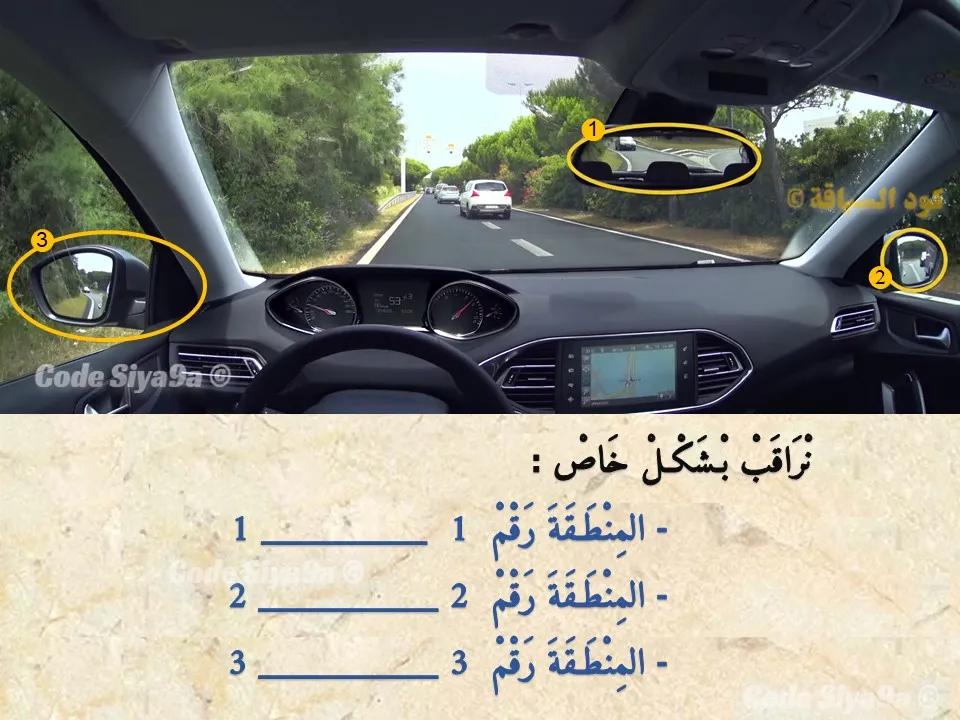
بيّن الجواب
الجواب الصحيح: 2
في هذه الحاله هذه كاينه اندماج ما بين جوج ديال الطرقان.
- واجبه عليا انني نراقب بشكل خاص المنطقه رقم 2. في هذه الحاله هذه خاصني نعطي حق الاسبقيه للناس اللي جايين من جهه اليمن.
السؤال 2
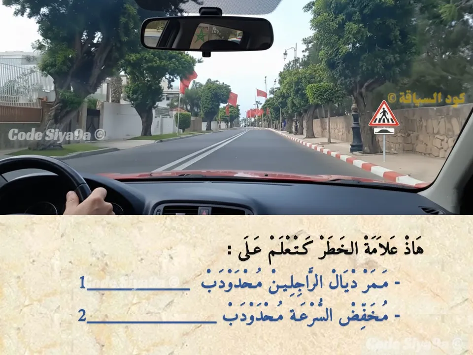
بيّن الجواب
الجواب الصحيح: 1
هذا العلامة ديال الخطر كتعلم على ممر ديال الراجلين على بعد 50 متر.
- العلامة التكميليه "لويحة" كتعلم بلي هذا ممر ديال محدودب.
السؤال 3
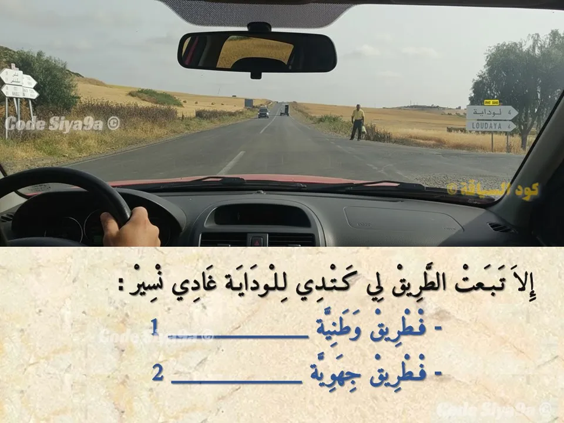
بيّن الجواب
الجواب الصحيح: 2
هذا العلامة ديال الاتجاه كتعلم بلي الطريق لي على ليمن كتدي الى لوداية .
- العلامة في الاعلى فيها لون اصفر . اللون الاصفر كيعني انا هذا الطريق جهوية .
السؤال 4
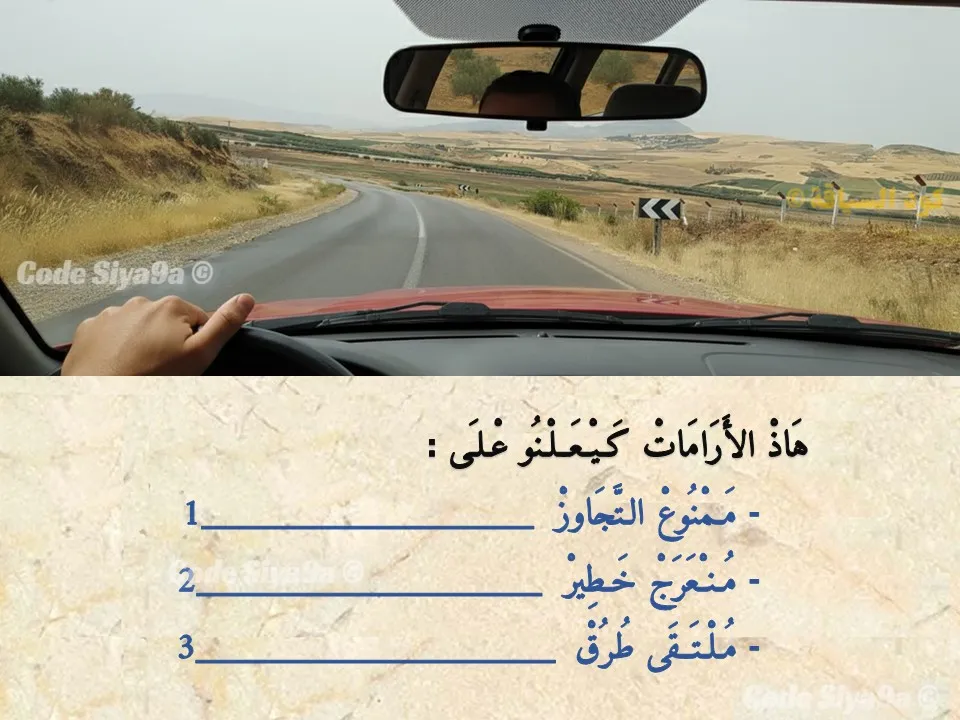
بيّن الجواب
الجواب الصحيح: 2
هذه الارامات كيعلنوا على منعرج خاطر على اليسر.
السؤال 5
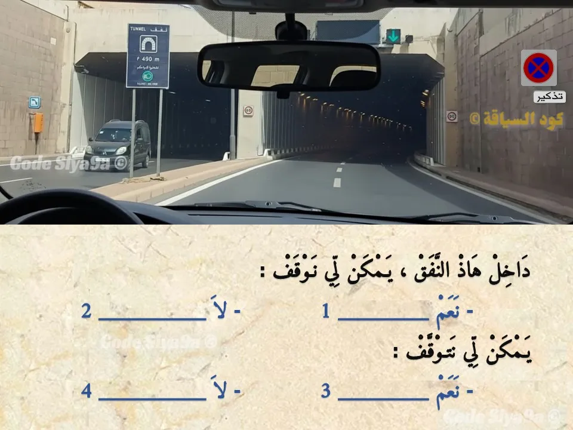
بيّن الجواب
الجواب الصحيح: 2 و 4
في هذه الحاله هذه عندي علامه ديال ممنوع الوقوف والتوقف. بالاضافه الخط متصل اقصى اليمين.
-يعني داخل هذه النفق غادي يكون ممنوع لي الوقوف والتوقف.
السؤال 6
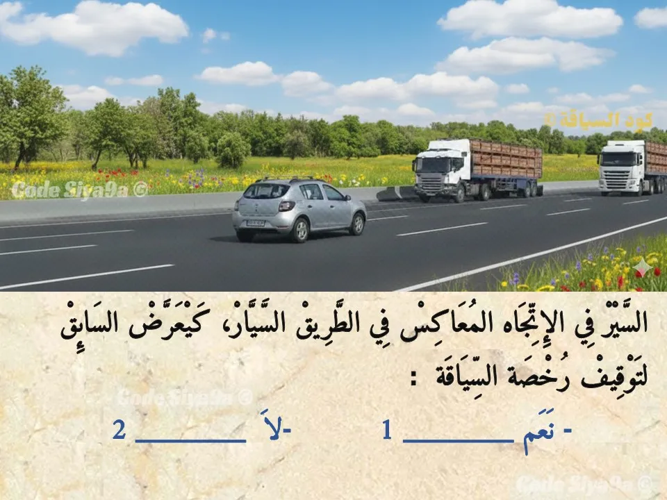
بيّن الجواب
الجواب الصحيح: 1
السيف الاتجاه المعاكس في الطريق السيار كي تعتبر جنحه كتعرض السائق:
- غرامه ماليه من 4000 حتى 8000 درهم.
-توقيف رخصه السياقه لمده تتراوح ما بين شهر واحد وثلاث اشهر.
السؤال 7
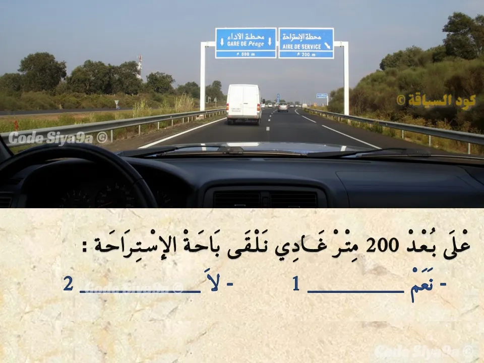
بيّن الجواب
الجواب الصحيح: 1
التشوير الطرقي كيعلم باللي على بعد 200 متر راه غادي نلقى باحه الاستراحه.
السؤال 8
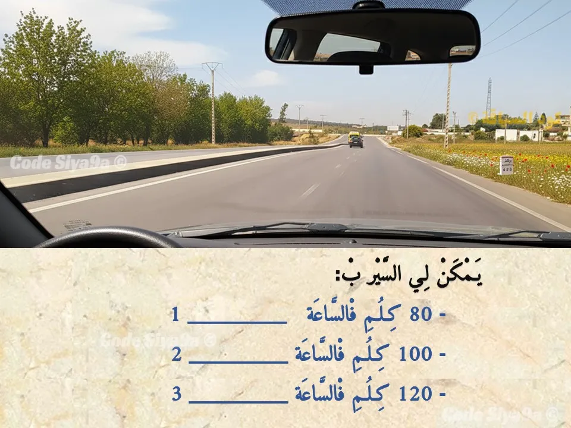
بيّن الجواب
الجواب الصحيح: 1 و 2
هل الارمة كتعلم باللي كانسير في الطريق وطنيه.
يعني السرعه محدوده في 100 كلم في الساعه.
- وبالتالي يمكن لي نمشي ب 80 كلم في الساعه و 100 كلم في الساعه.
⛔ ممنوع علي نمشي 120 كلم في الساعه.
السؤال 9
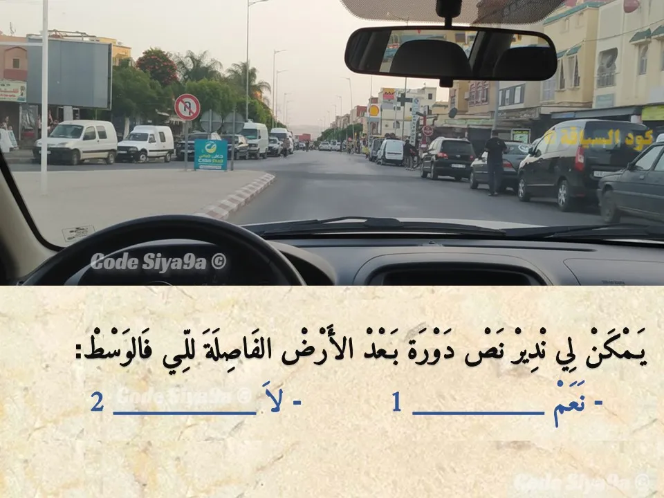
بيّن الجواب
الجواب الصحيح: 2
بعد الارض الفاصله اللي في الوسط غادي نلقى علامه ديال ممنوع القيام بنصف دوره.
- ⛔ يعني ما يمكنش لي ندير نصف دورة بعد الارض الفاصله.
السؤال 10
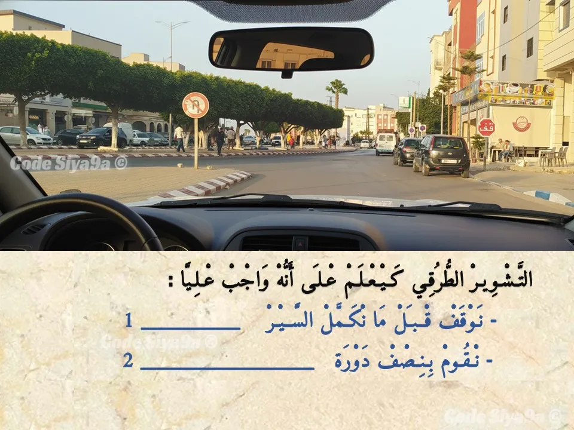
بيّن الجواب
الجواب الصحيح: 1
- التشوير الطرقي كيعلم على :
- علامه قف يعني واجب علي نوقف قبل ما نكمل السير للقدام.
- علامه ممنوع القيام بين نصف دوره.
في السؤال ممنوع عليا ندير نصف دوره ماشي واجب علي ندير نصف دوره.
السؤال 11
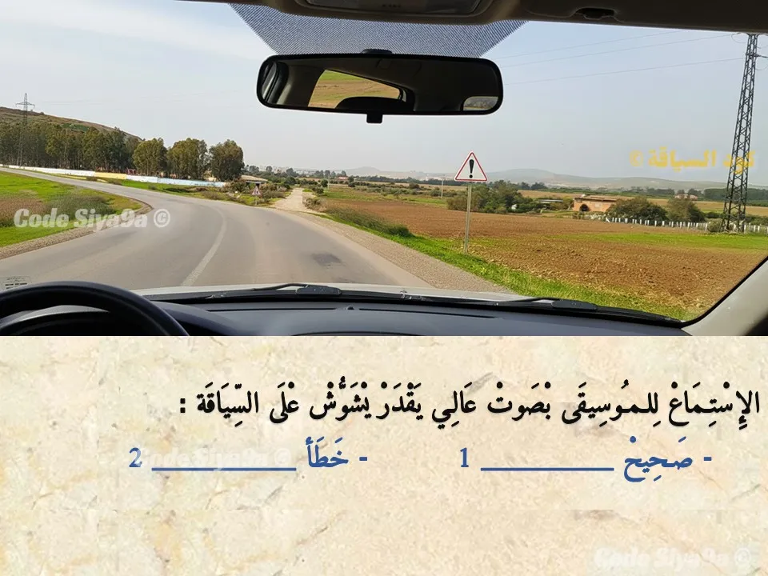
بيّن الجواب
الجواب الصحيح: 1
الاستماع للموسيقى بصوت عالي يقدر يشتت ويشوش الانتباه ديال السائق.
السؤال 12
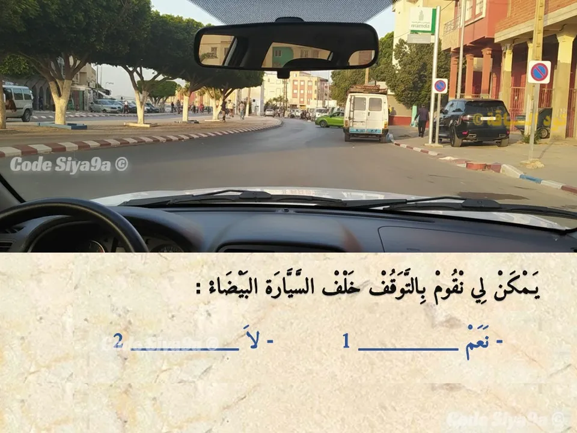
بيّن الجواب
الجواب الصحيح: 2
خلف السياره البيضاء عندي 2 ديال العلامات ديال ممنوع التوقف وبالتالي ممنوع علي التوقف خلف السياره البيضاء.
السؤال 13
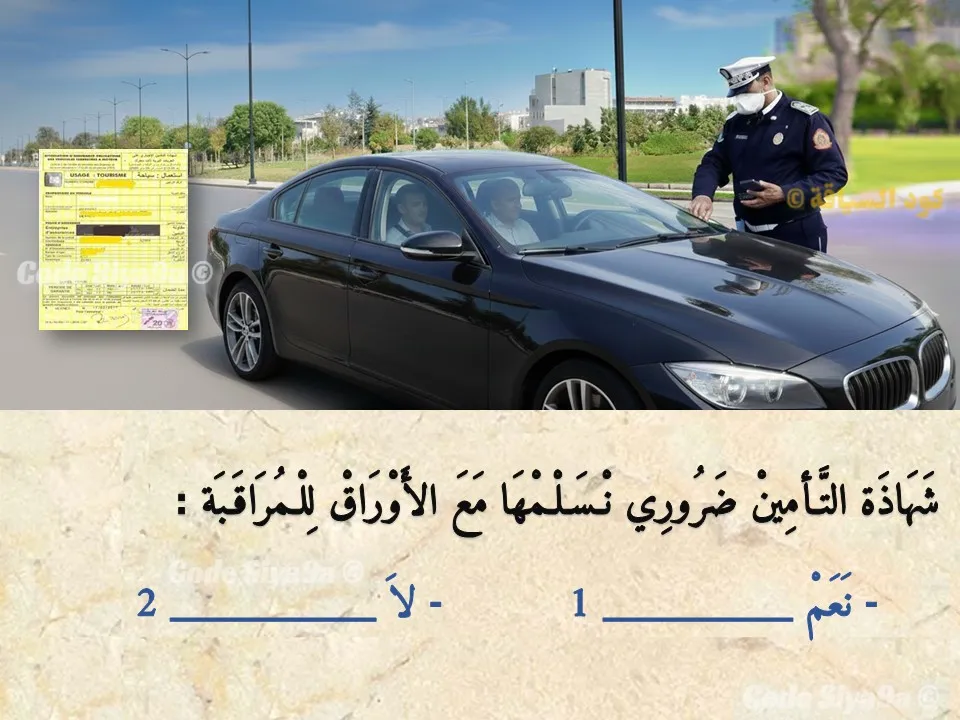
بيّن الجواب
الجواب الصحيح: 1
من بين الاوراق الضروريه اللي من الواجب الادلاء بها عند المراقبه عندنا:
- شهاده التسجيل.
-رخصه السياقه.
- شهاده التامين.
- شهاده الضريبه الثانويه.
-شهاده الفحص التقني بالنسبه للسيارات اللي كايتجاوز العمر ديالهم خمس سنين.
السؤال 14
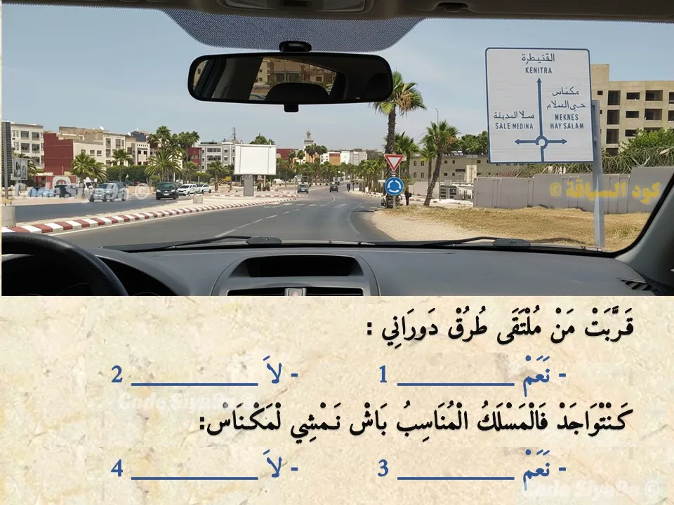
بيّن الجواب
الجواب الصحيح: 1 و 3
التشوير الطرقي كيعلم باللي قربت من ملتقى طرق دوراني.
- باش نمشي لمكناس غادي نستعمل الخرجه رقم واحد. يعني خاصني نكون في المسلك رقم واحد. ونكون شاد اليمين باش يسهل علي نخرج من المدار .
☑️ يعني انا في المكان المناسب باش نمشي لمكناس.
السؤال 15
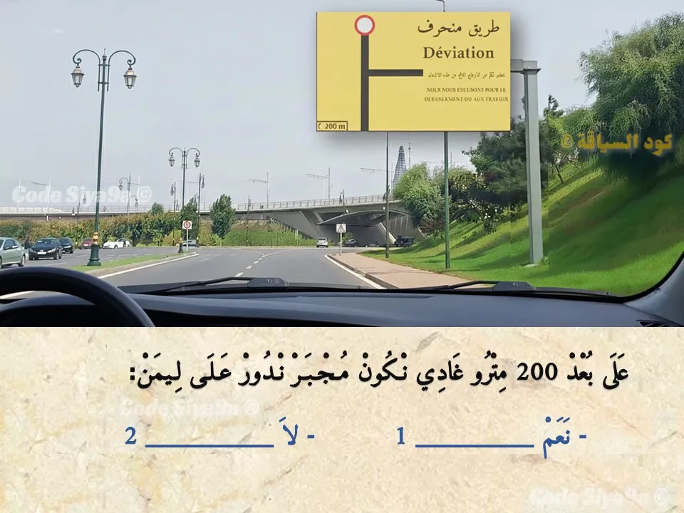
بيّن الجواب
الجواب الصحيح: 1
هذه العلامه كتعلم على انني غادي نوصل لطريق منحرف على بعد 200 م.
- عندي علامه ديال المنع كاتمعني باش نكمل السير القدام.
وبالتالي باش نكمل السير للقدام على بعد 200 متر واجب علي انني ندور على ليمن .
السؤال 16
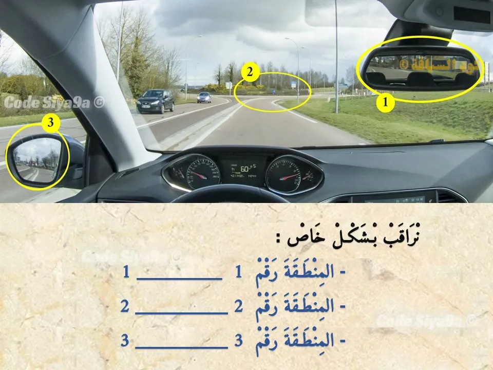
بيّن الجواب
الجواب الصحيح: 2
هذه الحاله هذه الخطر الحقيقي كيتواجد في المنطقه رقم 2 .
السؤال 17
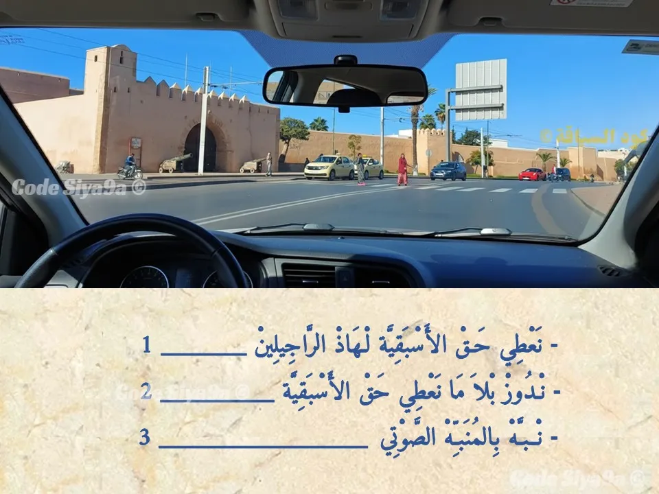
بيّن الجواب
الجواب الصحيح: 1
هذا الرجلين قاطعين الطريق فوق ممر الراجلين. وبالتالي واجب علي انني نعطيهم حق الاسبقيه.
السؤال 18
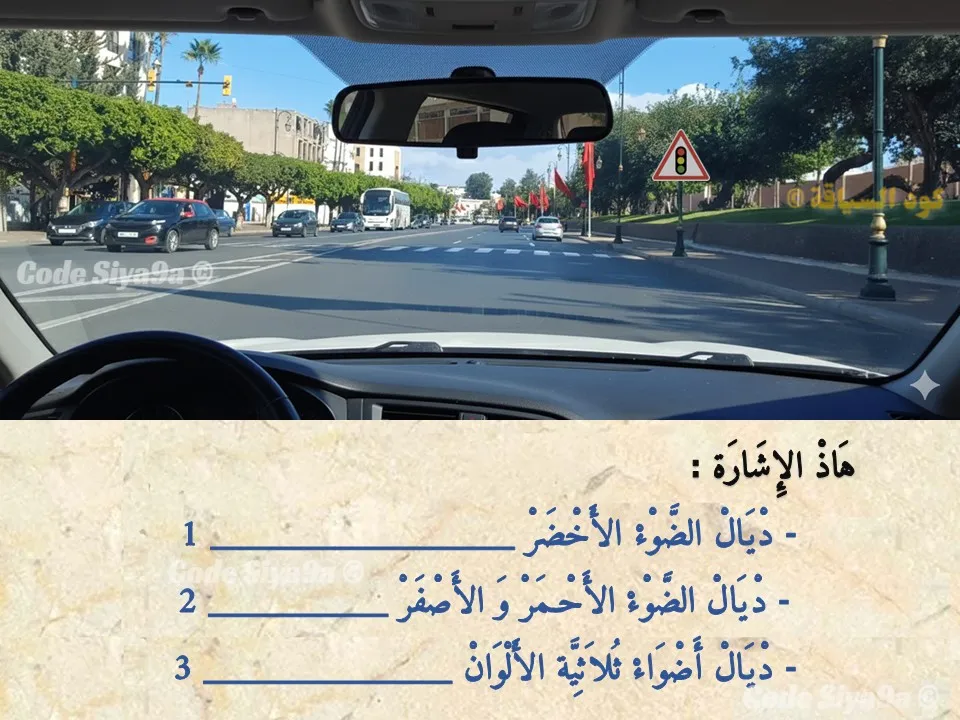
بيّن الجواب
الجواب الصحيح: 3
هذه العلامه ديال الخطر كتعلم على ضوء ثلاثي الالوان. على بعد 50 م.
السؤال 19
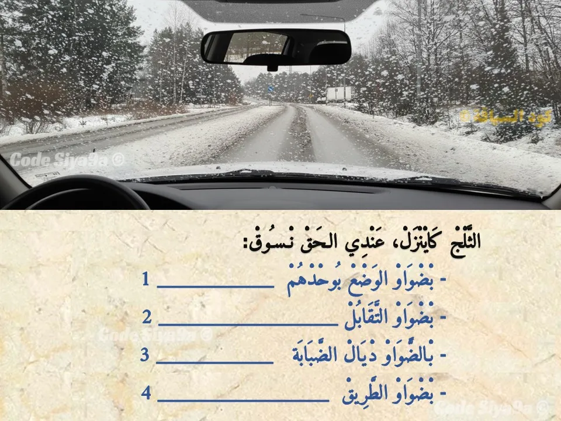
بيّن الجواب
الجواب الصحيح: 2 و 3
عند تساقط الثلج من الواجب نستعمل الاضواء التاليه:
- اضواء التقابل.
-اضواء ديال القدام و ديال الخلف.
- يمكن اللي نستعمل ضوء الوضع ولكن ماشي بوحده. يمكن لي ايضا نستعمل ضوء المساعد بالنهار.
السؤال 20
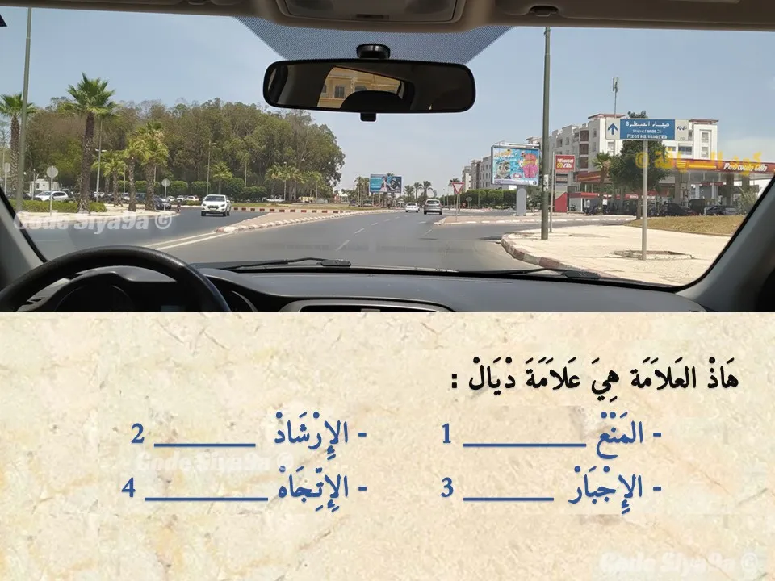
بيّن الجواب
الجواب الصحيح: 4
هذه العلامه هي علامه ديال الاتجاه كتعلم على انني باش نمشي لميناء القنيطره نتبع الطريق للقدام.
السؤال 21
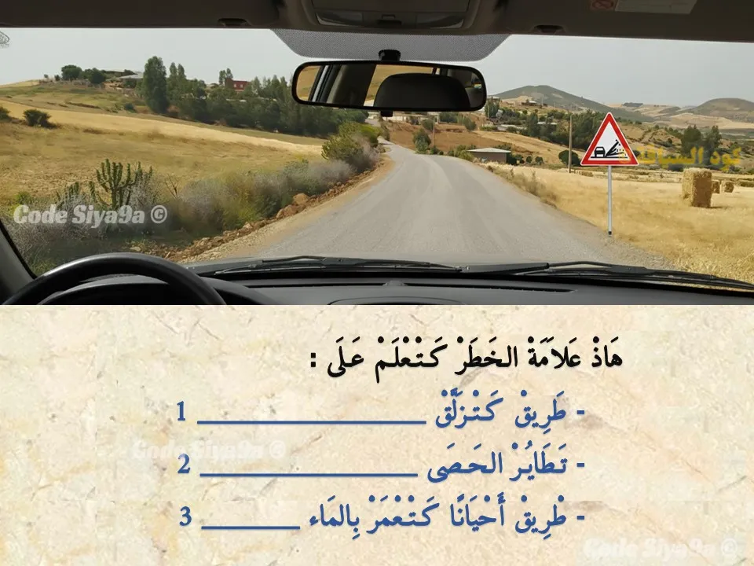
بيّن الجواب
الجواب الصحيح: 2
هذا العلامة ديال ديال الخطر . كتعلم على خطر طريق فيها تطاير الحصى .
واجب عليا ننقص من السرعة في هذا الحالة.
السؤال 22
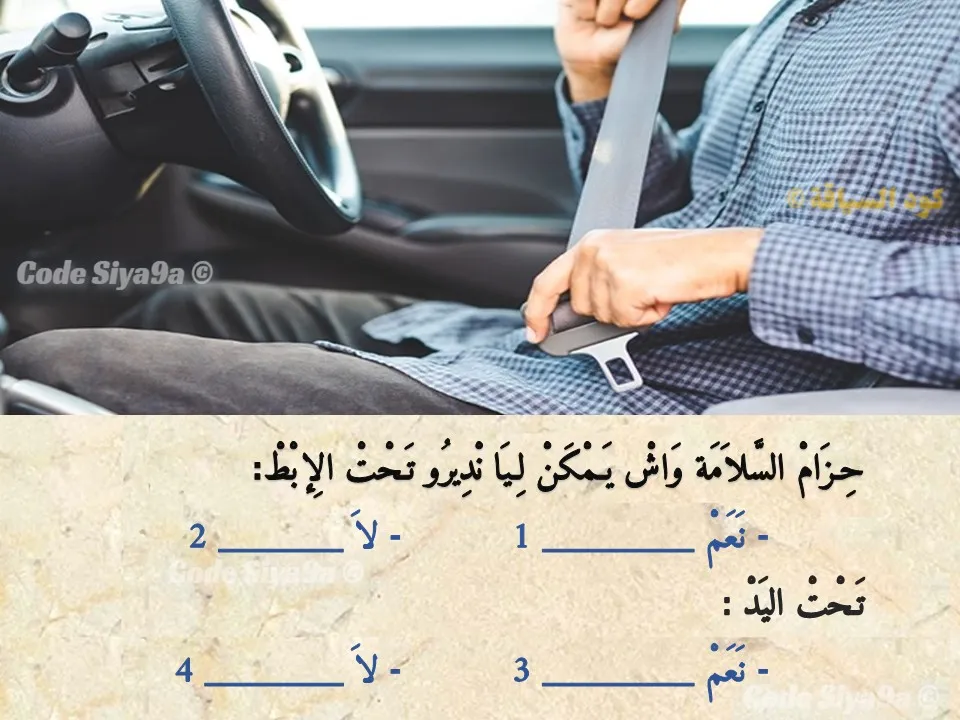
بيّن الجواب
الجواب الصحيح: 2 و 4
حزام السلامه واجب يكون دايز فوق الكتف. و فوق الصدر. و فوق الخصر.
السؤال 23
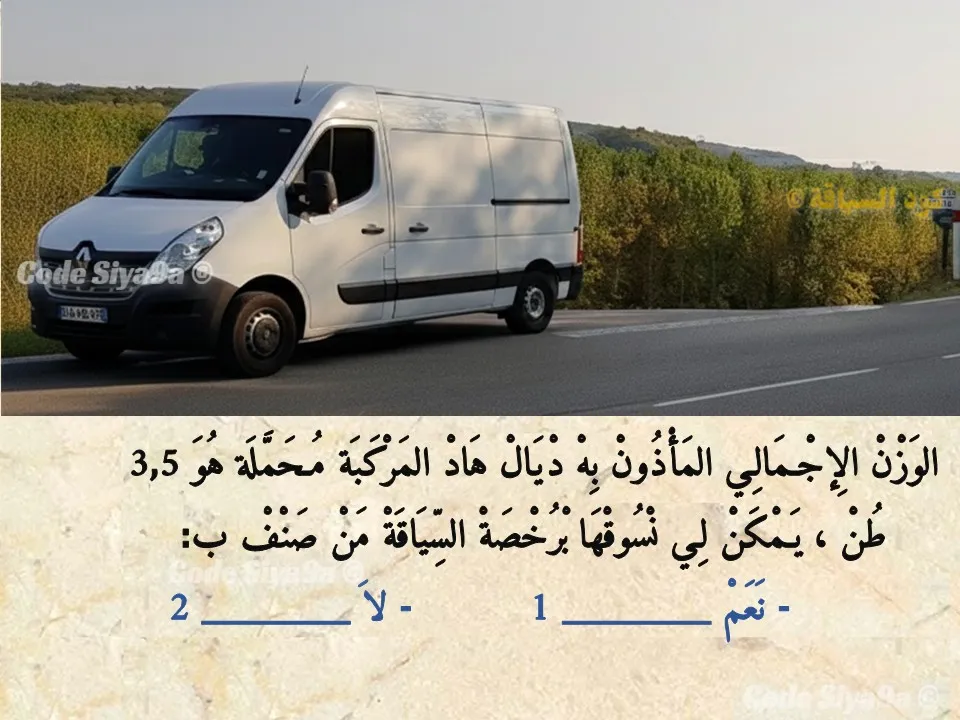
بيّن الجواب
الجواب الصحيح: 1
برخصه السياقه من صنف "ب" يمكن لي نسوق المركبه كيبلغ مجموع وزنها مع الحموله 3.5 طن.
-الوزن الاجمالي الماذون به لهذه المركبه هو 3.5 طن وبالتالي يمكن لي نسوقها برخصه السياقه من صنف "ب"
السؤال 24
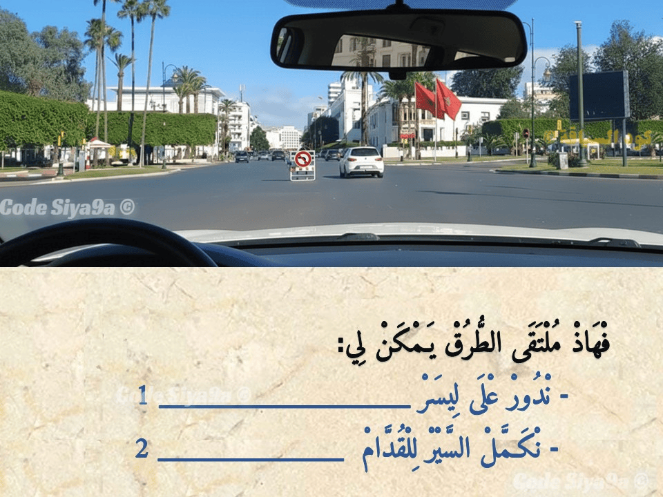
بيّن الجواب
الجواب الصحيح: 2
في هذا الملتقى عندي علامه ديال الممنوع نغير الاتجاه على اليسار.
- وبالتالي غادي يكون ممنوع علي ندور على اليسار ويمكن لي نكمل السير للقدام.
السؤال 25
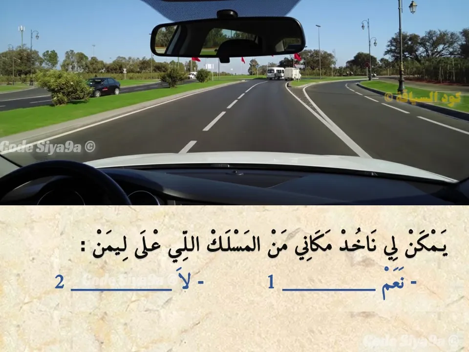
بيّن الجواب
الجواب الصحيح: 2
المسلك اللي على اليمن كايفصلني عليه خط متصل بالتالي ممنوع علي نغير المسلك الان للمسلك اللي على اليمن.
- في حاله غيرت للمسلك اللي على اليمن غادي نكون ارتكبت المخالفه من الدرجه الاولى ديال قطع الخط المتصل. وغادي نتعرض الغرامه ماليه 700 درهم.
السؤال 26
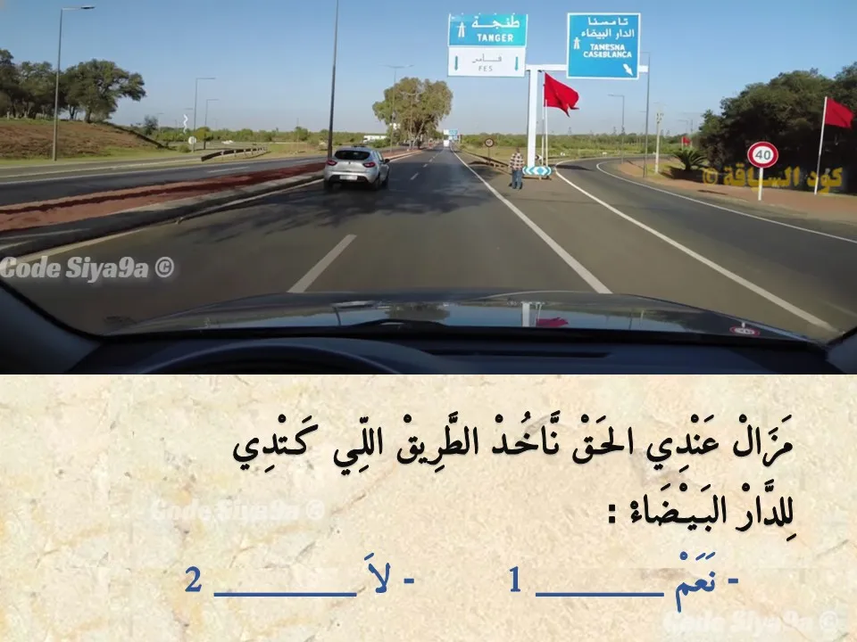
بيّن الجواب
الجواب الصحيح: 2
باش نمشي للدار البيضاء كان خاصني نستعمل المسلك اللي اقصى اليمين.
في هذه الحاله المسلك اللي اقصى اليمين اللي كايدي لدار البيضاء كايفصلني عليه خطوط متصله. ممنوع علي انني نتخطاهم.
وبالتالي ما بقاش عندي الحق باش ناخذ الطريق اللي كاتدي للدار البيضاء.
السؤال 27
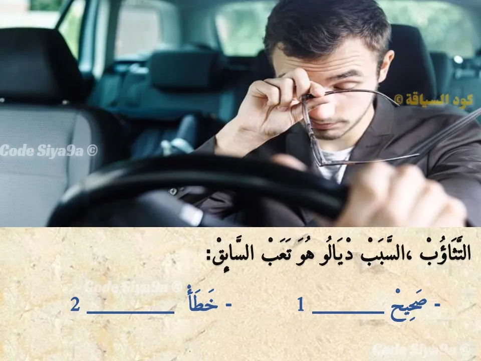
بيّن الجواب
الجواب الصحيح: 1
التثاؤب السبب ديالو هو التعب ديال السائق.
- منين كايكون السائق دوز واحد المده طويله هو كايسوق كيحس بالتعب وبالتالي كايحس بالنعاس و التثاؤب.
السؤال 28
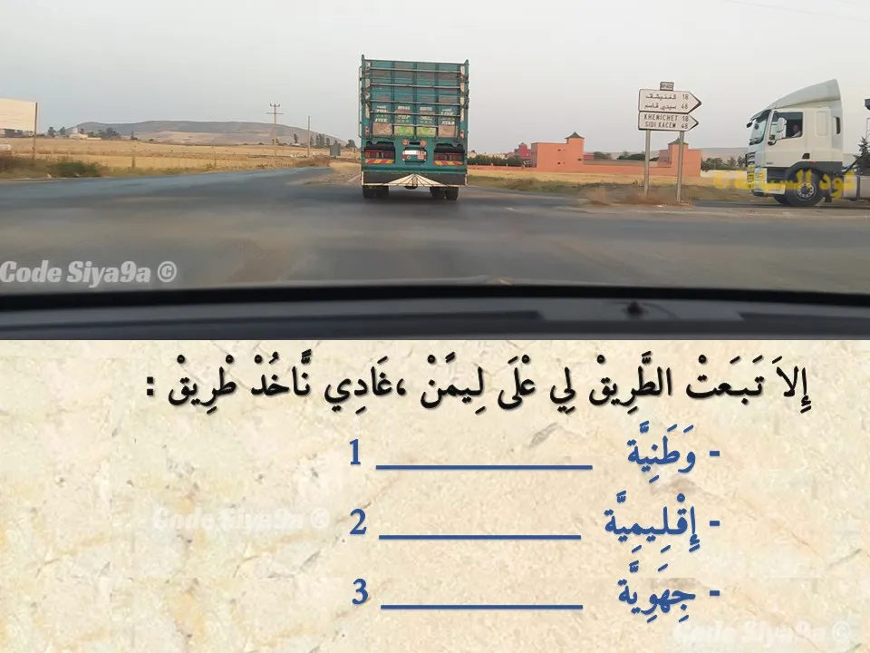
بيّن الجواب
الجواب الصحيح: 2
تصوير الطرقي كيعلم باللي الى تبعت الطريق اللي كاتمشي اليمين. غادي نكون كانسير في الطريق اقليميه.
- الارقام في الاعلى ديال العلامه باللون الابيض كيعني ان هذا الطريق اللي على اليمن هي طريق اقليميه.
السؤال 29
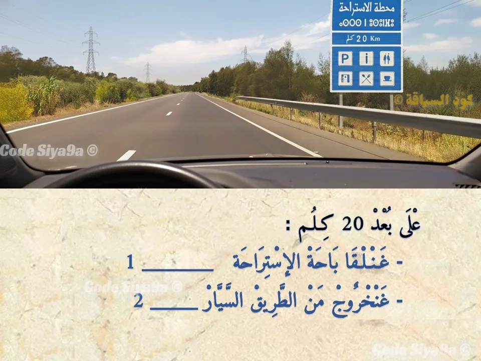
بيّن الجواب
الجواب الصحيح: 1
التشوير الطرقي كيعلم على بعد 20 كلم غانلقى باحت الاستراحه.
السؤال 30
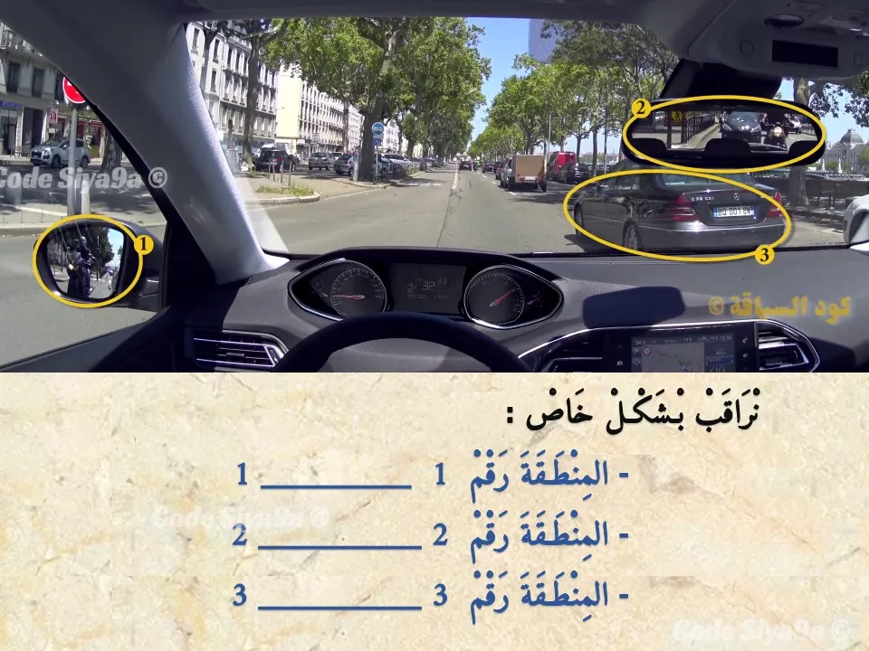
بيّن الجواب
الجواب الصحيح: 3
في هذه الحاله الخطر الحقيقي كيتواجد في المنطقه رقم 3. السياره كاتمشي قدامي واجب علي انني نتابه ربما تجاوز او تغير المسلك ديالها.
- اما الناس اللي ورايا راهم كيشوفوني يعني خاصهم يراقبوا السلوك ديالي وانا خاصني الرقم السلوك ديال الناس اللي قدامي.
السؤال 31
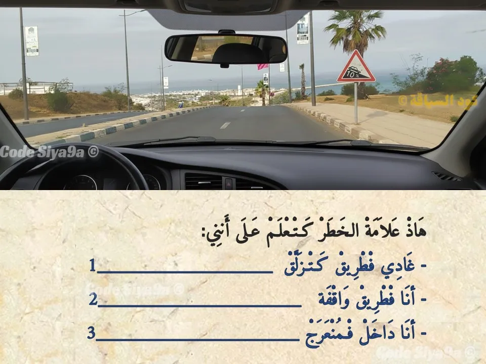
بيّن الجواب
الجواب الصحيح: 2
هذا العلامة ديال الخطر . كتعلم على انني كنسير في طريق مايلة بززاف .
- غادي نهبط ب 10 متر كلى 100 متر . يعني طريق واقفة .
السؤال 32
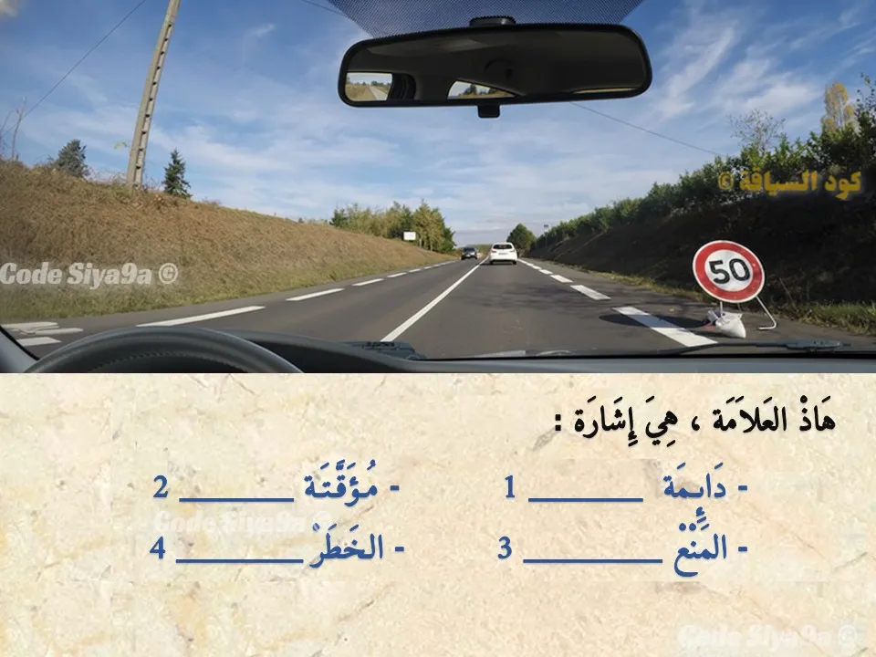
بيّن الجواب
الجواب الصحيح: 2 و 3
هذه العلامه هي اشاره ديال المنع ومؤقته. منين كاتكون العلامه موضوعه على الحامل او اللون الاصفر كيعني ان تصوير مؤقت.
السؤال 33
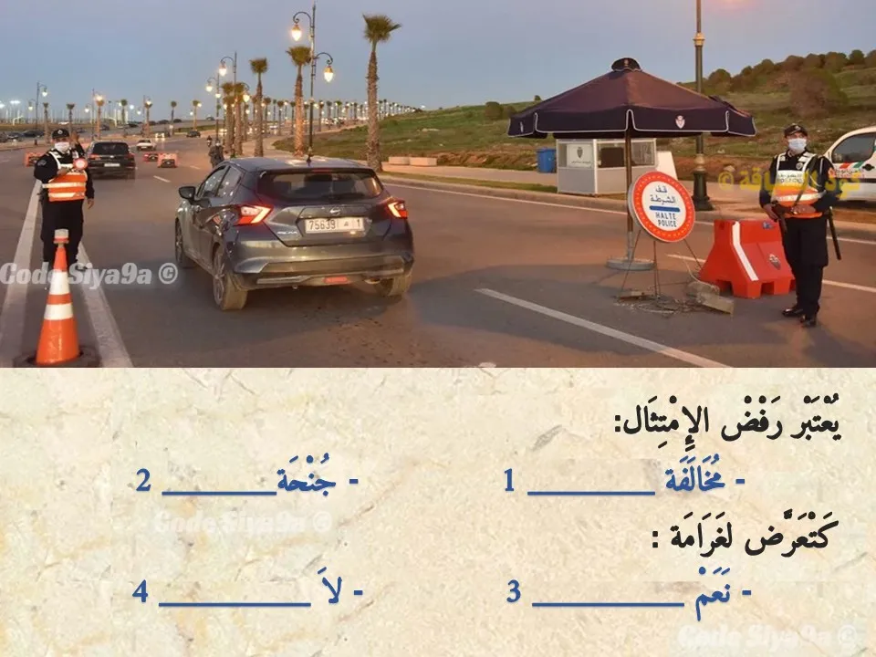
بيّن الجواب
الجواب الصحيح: 2 و 3
رفض الامتثال من طرف السائق الاوامر القانونيه الصادره اليه وذلك بصفه عمديه كيتعتبر جنحه. كتعرض السائق :
- غرامه ماليه من 1200 درهم الى 2000 درهم.
- سحب 2 ديال نقاط رصيد رخصه السياقه.
السؤال 34
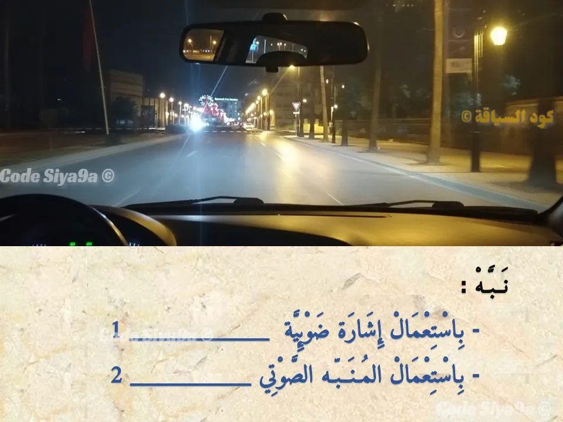
بيّن الجواب
الجواب الصحيح: 1
في هذه الحاله مستعمل الطريق اللي قبلتي ضايقني باستعمال اضواء الطريق.
- يمكن لي ننبه باشاره ضوئيه باضواء الطريق. في هذه الحاله هذه.
السؤال 35
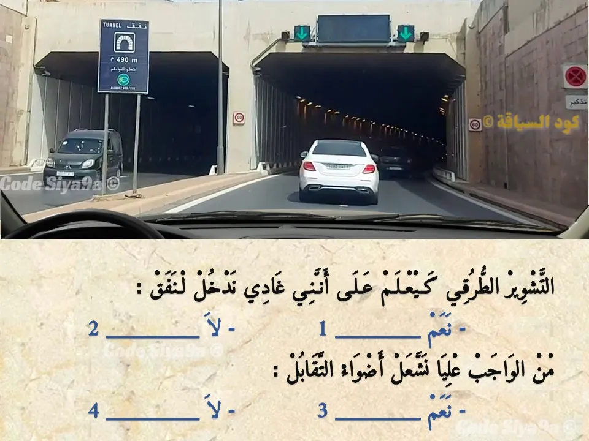
بيّن الجواب
الجواب الصحيح: 1 و 3
التشوير الطرقي كيعلم على انني غادي ندخل للنفق.
وداخل النفق من الواجب عليا نستعمل اضواء التقابل.
السؤال 36
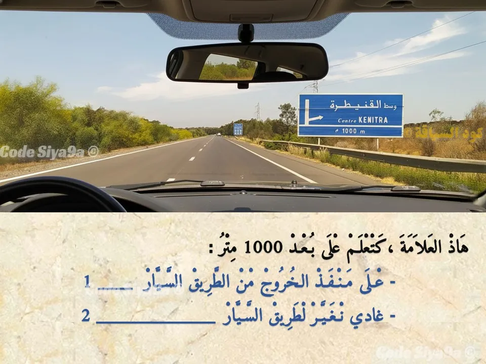
بيّن الجواب
الجواب الصحيح: 1
التشوير الطرقي كيعلم باللي على بعد 1000 مترو غادي نلقى خرجه من الطريق السيار كاتدي الوسط القنيطره.
وبالتالي كتعلم باللي غادي نلقى منفذ من الطريق السيار على بعد 1000 متر.
السؤال 37
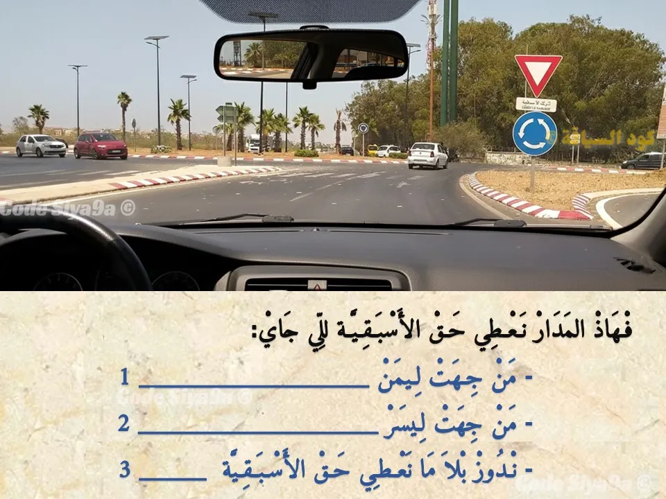
بيّن الجواب
الجواب الصحيح: 2
في هذه الحاله هذه عندي مدار مع علامه ديال اجباري ندور على المدار من جهه اليمن ومثلث مقلوب وليست لي حق الاسبقيه.
- في هذه الحاله هذه الاسبقيه اللي جاي من اليسار.
السؤال 38
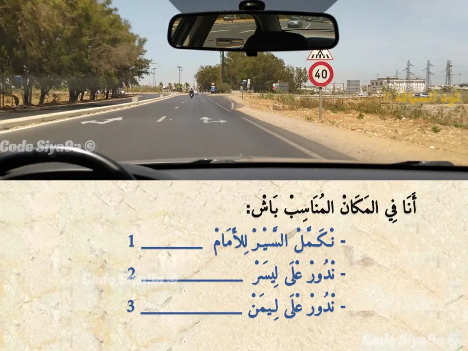
بيّن الجواب
الجواب الصحيح: 1 و 3
التشوير الطرقي المرسوم على الارض . كيعلم بلي في هذه المسلك هذا يمكن لي نكمل السير القدام ويمكن لي ندور على اليمين.
السؤال 39
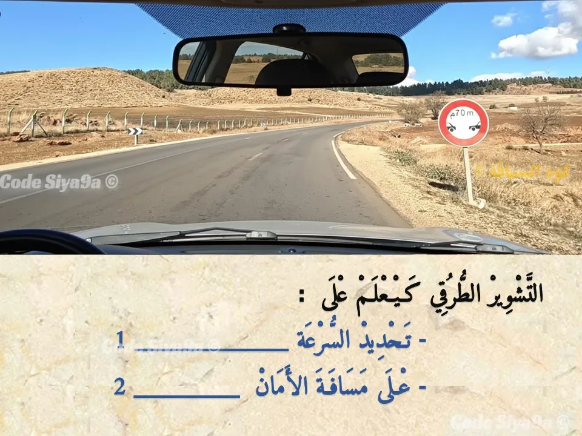
بيّن الجواب
الجواب الصحيح: 2
التشوير الطرقي كيعلم على مسافه الأمان . من الواجب عليها نخلي مسافه امان ما تقلش على 70 متر بيني وبين السياره اللي قدامي .
السؤال 40
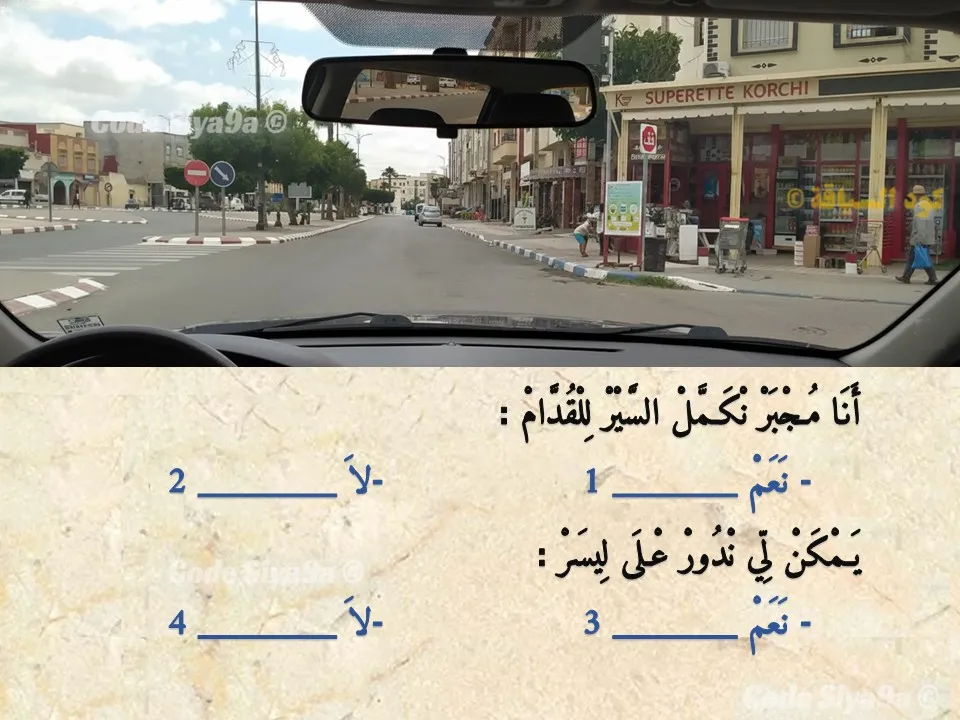
بيّن الجواب
الجواب الصحيح: 2 و 3
في هذه الحاله هذه يمكن لي نكمل السير القدام ويمكن لي ندور على اليمن ويمكن لي ندور على اليسار.
- التشوير الطرقي ما كايجبرنيش باش نكمل السيد القدام.
- العلامات اللي قدامي هي علامه ديال المنع وعلامه ديال الاجبار.
- العلامه ديال الاجبار والعلامه ديال المنع هي موضوعه في الرصيف الثاني.
في هذه الحاله باش نكمل السير القدام العلامه ديال الاجبار كاتحدد لي المسلك اللي خاصني نمشي فيه. اما العلامه الثانيه فهي علامه ديال المنع كتمنعني باش الا كنت غادي نكمل السير القدام نستعمل المسلك ديال مستعمل الطريق اللي جايين في الاتجاه المعاكس.
- باش ندور على اليسار ما كاين حتى شي علامه كاتمنعني من انني ندور على اليسار.